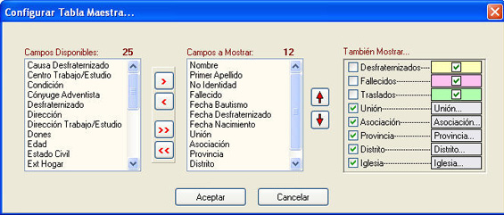
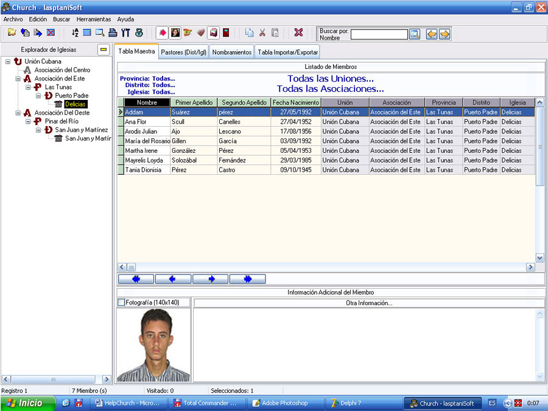
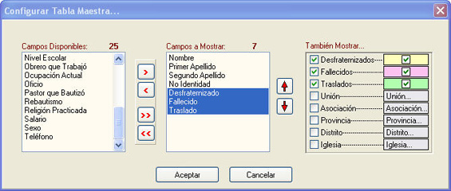
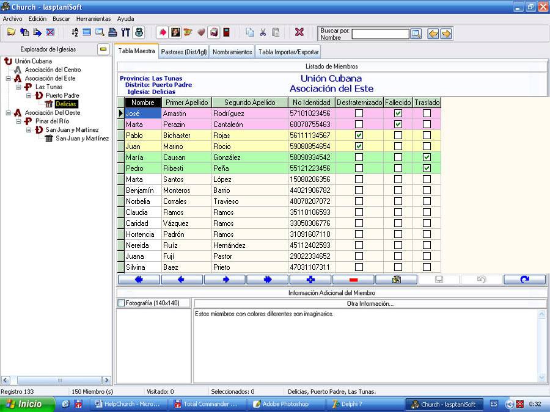

Configuración
La figura 21 muestra la indispensable ventana de configurar la Tabla Maestra.

Figura 21. Configurar Tabla Maestra.
Es la ventana que le dice al motor de búsquedas qué campos quiero yo mostrar (Campos a Mostrar). No hay necesidad de mostrar todos los campos (Campos Disponibles), en este caso 37 campos, quizás a la hora de introducir datos necesite mostrar todos, pero a la hora de realizar consultas no necesariamente tiene que usarlos todos. Ilógico sería también pensar imprimir los 37 campos o datos de los miembros, se necesitaría una impresora y un papel bien grandes. Por lo regular trabajará con los campos que necesite en el momento.
Puede seleccionar varios campos a la vez y de varias maneras:
1. Arrastrando y soltando desde Campos Disponibles para Campos a Mostrar.
2. Doble clic sobre campos Disponibles.
3. Usando las flechas del panel entre Campos Disponibles y Campos a mostrar.
Este mismo procedimiento sirve para el proceso inverso.
Los campos se pueden ordenar con las flechas que se encuentran a la derecha de Campos a Mostrar. Seleccione el campo a mover y clic sobre cualquiera de las flechas. Por la rejilla de datos también se pueden ordenar.
Cuando esté a gusto con la selección oprima el botón Aceptar u oprima la tecla Enter. Por defecto esta configuración se guardará (vea Menú Principal/Herramientas/Guardar Configuraciones), de modo que cuando abra nuevamente la aplicación, la configuración de la Tabla Maestra será la última que usted realizó. Para cancelar y volver al estado anterior clic sobre el botón Cancelar u oprima la tecla Escape.
El panel de chequeo También Mostrar…es opcional a su necesidad, por ejemplo en caso de una búsqueda Global usted puede marcar Unión, Asociación,…,Iglesia, para saber a cual o cuales pertenece un miembro en particular, vea figura 22.

Figura 22. Resultado de Búsqueda con También Mostrar...(Unión...Iglesia).
Observe que los campos aparecen del color conque se presentan en el panel También Mostrar...
Los otros tres primeros campos que quedan en el Panel También Mostrar..., es decir, Desfraternizado (amarillo), Fallecido (rosado) y Traslado (verde), aunque usted los marque no se reflejan sobre Campos a Mostrar, para ello tiene que seleccionarlos de Campos Disponibles, esta opción es para mostrar los miembros que están desfraternizados, fallecidos o han sido trasladados, en cuyo caso ya no debieran aparecer en su iglesia como miembros reales. Normalmente cuando un miembro es desfraternizado, el campo Desfraternizado en la rejilla de datos se selecciona con Si, con lo que al ejecutar nuevamente una consulta desaparece de la base de datos, si usted marca esta casilla el ex-miembro aparece en la cuadrícula en color amarillo porque usted está diciendo que aún así lo muestre.
Resumiendo: La combinación de los dos apartados (Campos a Mostrar y También Mostrar…), en lo que respecta a los tres primeros campos hace que cuando alguno de ellos esté en Si ese miembro aparezca en la cuadrícula con el color que lo identifica. Ver figura 24.
Para obtener el resultado mostrado en la figura 24 hemos de configurar la Tabla Maestra de la siguiente forma:
Marcamos Desfraternizado, Fallecido y Traslado en También Mostrar…, pero además vamos a Campos Disponibles y pasamos cada uno de estos campos para Campos a Mostrar.

Figura 23. Configurar Tabla Maestra (ver campos color amarillo, rosado y verde).

Figura 24. Resultado de Configurar la Tabla Maestra según figura 23.